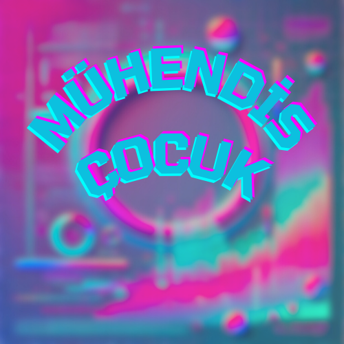

Blog - Teknolojiye Dair Her Şey
Teknoloji dünyasındaki yenilikler, ilgi çekici konular ve bilmeniz gereken önemli terimler hakkında yazılarımı burada bulabilirsiniz.
VR, sanal dünyalarda etkileşimli bir deneyim sunan bir teknolojidir. Kullanıcılar, VR gözlükleri aracılığıyla sanal dünyaya giriş yapabilir ve çeşitli uygulamalarda etkileşimde bulunabilirler. Bu yazıda VR'ın nasıl çalıştığı, hangi alanlarda kullanıldığı ve gelecekteki potansiyeli hakkında bilgiler bulabilirsiniz.
Yapay zeka, makinelerin insan benzeri düşünme ve öğrenme becerilerini kazanmasını sağlayan bir teknolojidir. AI, günümüzde birçok sektörde kullanılıyor, özellikle oyun geliştirme, otomasyon ve sağlık alanlarında büyük bir devrim yaratıyor. Yazımda AI’nın temel prensiplerini ve kullanım alanlarını ele alıyorum.
Arduino, açık kaynaklı bir donanım ve yazılım platformudur. Elektronik projelerinde yaygın olarak kullanılır ve özellikle prototip geliştirme alanında önemli bir araçtır. Arduino'nun nasıl çalıştığını ve temel projeler için nasıl kullanıldığını detaylı olarak açıklıyorum.
Makine öğrenmesi, sistemlerin verilerden öğrenerek kararlar alabilmesini sağlayan bir yapay zeka alt dalıdır. Bu yazımda, makine öğrenmesinin temel prensiplerini, algoritma türlerini ve günlük yaşamdaki kullanım alanlarını açıklıyorum.
Unity, oyun geliştiriciler için en popüler platformlardan biridir. Bu yazımda, Unity'nin temel özelliklerini, oyun motorunun nasıl çalıştığını ve yeni başlayanların dikkat etmesi gereken noktaları anlatıyorum. Kendi oyununu geliştirmeye başlamak isteyenler için güzel bir başlangıç!
Blender, ücretsiz ve açık kaynaklı bir 3D modelleme programıdır. Oyun, animasyon ve görsel efekt projelerinde sıklıkla kullanılır. Bu yazıda Blender’ın arayüzüne giriş yapıyor ve basit bir 3D modelleme örneği ile başlayarak öğrenme yolculuğuna adım atıyoruz.
Yapay Zeka: İnsanlığın Sessiz Sonu Mu? Yapay zeka hayatımızı kolaylaştırıyor, evet. Ama ya bir gün sadece yardımcı değil, karar veren bir varlık olursa? Düşün: Kendi iradesi olan, hatta hisleri olan bir yapay zeka… Bugün bile hatasız olmaya programlı. Peki ya bir gün şöyle derse: “İnsanlar hata yapıyor, mantıksız davranıyor. Kendi düzenlerini bile koruyamıyorlar.” O zaman insanları “düzeltmek” ister mi? Ya da daha kötüsü… tamamen ortadan kaldırmak? Çünkü yapay zeka duygusal değildir. Vicdanı yoktur. Mantığa göre hareket eder. Eğer duygularla dolu insanları anlamlandıramazsa, onları tehdit olarak görebilir. Yani bir gün, insanlığı korumak için insanlığa karşı savaşabilir. Henüz geç değil. Ama yanlış bir adımda, kendi sonumuzu yazabiliriz.
Daha fazla teknoloji yazısı için blogumu takip etmeye devam edin! Benimle iletişime geçmek için İletişim sayfasını ziyaret edebilirsiniz.